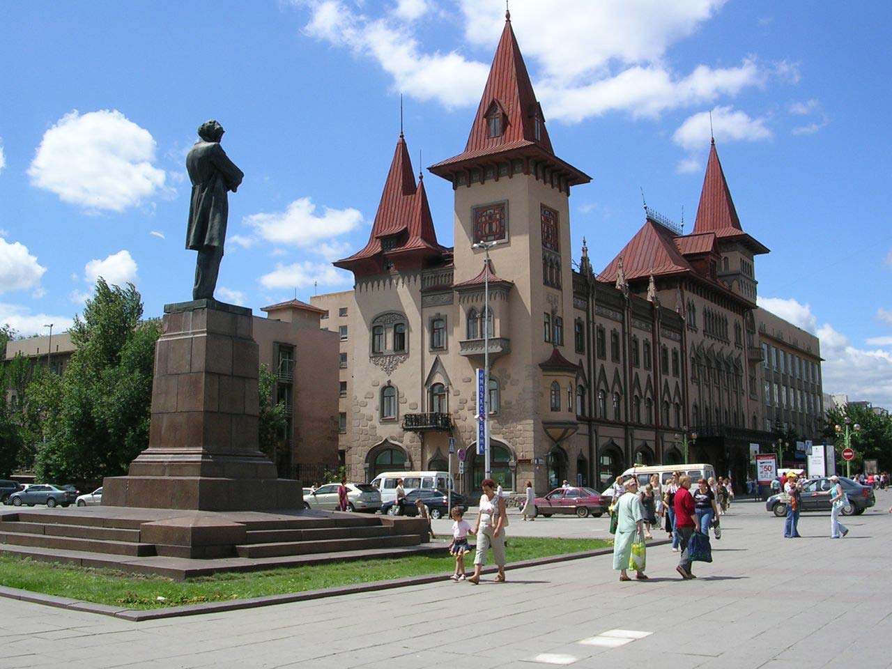

      <div class="map-obj">
        <div class="map-obj-photo">
          
          <span class="close-panel"><i class="fas fa-times"></i></span>
        </div>
        <div class="map-obj-content">
          <h3 class="title-panel"></h3>
          <div class="map-obj-info">
            <div class="geo"><i class="fas fa-map-marker"></i> <span class="address-panel"></span></div>
            <div class="hashtag-panel"></div>
            <div class="description-panel"></div>
            <div class="average-panel"></div>
            <div class="open-time-panel"></div>
            <div class="linkToSite-panel"></div>

          </div>
          <button type="button" name="button" class="btn btn-danger" style="margin-left: 110px;" onclick="addPointToRoute()">Добавить к маршруту</button>
        </div>
      </div>
